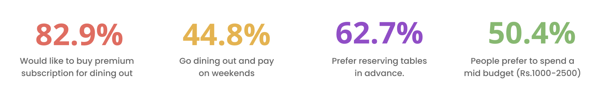

The Graduation Project with topic - “Researching and creating a premium subscription program for diners catering to the needs of elite users”, is an indepth research project that has been built on basis of deep research, analysis and resource utilization to rethink the premium membership subscription plans for food connoisseurs from the scratch for improved digital experience, customer loyalty and retention under the mentorship of Mr. Shrikant Sharma.
Despite the already available service (Dineout Passport) being a premium paid club for elite foodies, its serves just as another platform for discounts and offers with some exclusive benefits only. The regulars receive 10-20% savings, as well as promo cash waivers. Being a very niche market, it isn’t as lucrative as a premium membership for regular users to upgrade or motivate new users to buy it.
The goal is to provide luxury food enthusiasts with a more streamlined and personalised digital experience with a more simplified online space.
The main aim of the project was to research and create a premium subscription program at premium restaurants for diners catering to needs of elite users.
Timeline & Design Process
One of the biggest challenges in retail is maintaining optimal inventory levels. Store representatives often struggle with out-of-stock products, leading to lost sales opportunities. To solve this, I worked on an Automatic Replenishment System that predicts inventory needs based on sales patterns, ensuring timely restocking and reducing manual intervention. This system improved efficiency, cut down on order delays, and enhanced overall customer satisfaction by minimizing stockouts.
Survey & Findings
Primary UX research methods are ways of generating insights about your users, their behavior, motivations, and needs. You can use various user research methods to identify challenges and opportunities to improve the user experience, including user interviews, surveys, focus groups, card sorting, usability testing, and more. There are various research methods one can adopt. Both qualitative and quantitative research yield different forms of data, and help to get an in-depth knowledge of the behaviours of individuals. While researching for the project, both the methods were used which helped to gain insights and get a deeper understanding for the project.

According to a surveys,
Many users turn to platforms like Zomato, Dineout, or EazyDiner to enjoy substantial discounts while dining out. However, a common point of disappointment arises when the final bill, inflated by hidden taxes and extra charges, exceeds the initially expected amount—leading to frustration and drop-offs. Despite these setbacks, premium subscriptions on these platforms continue to impress users with features like ease of transactions, exclusive discounts, free gifts, personalized preferences, fast and premium services, unlimited deals, early access to new launches, and real-time updates—all contributing to a sense of value for money. Casual dining spots and café-bistros remain the most preferred choices for users, and interestingly, over 80% of respondents expressed a strong interest in purchasing premium subscriptions due to the appeal of these benefits. Another significant user pain point is the difficulty in discovering new restaurants, largely due to the absence of real-time reviews and trusted recommendations, which makes decision-making challenging when trying something new.
Understanding User
These personas have been created after interviewing 5 potential Dineout passport users and non-users, selected out of 125 people who took the survey to gather qualitative and quantitative research for this project.


Final Designs
To arrive at the final designs, I followed a deeply iterative and user-centered design process rooted in research and validation at every stage. It began with understanding the target users through a combination of qualitative and quantitative methods, including surveys, user interviews, and behavioral analysis. This helped uncover key pain points, motivations, and expectations, which then informed the design strategy. I translated these insights into a clear information architecture that prioritized intuitive navigation, reduced cognitive load, and aligned with the users’ mental models. From there, I developed low-fidelity wireframes to map out essential user flows and interactions, focusing on structure and usability before aesthetics. These wireframes were tested through quick feedback loops with users and stakeholders, enabling me to identify gaps early and refine the experience accordingly. As the design matured, I incorporated visual hierarchy, microinteractions, and accessibility considerations into high-fidelity mockups. Continuous feedback sessions—ranging from informal usability walkthroughs to structured design critiques—played a crucial role in fine-tuning the layout, content, and interface components. Ultimately, the final designs were the result of thoughtful research synthesis, iterative prototyping, and collaboration, ensuring the solution was not only functional and user-friendly but also aligned with the project’s goals and the users' needs.


Conclusion
When we buy any subscription, we often consider several characteristics of the offering. Not only in OTT, Delivery and Ecoomerce business, but when it comes to Dining Out or Table reservation business, there’s a high need and demand of premium subscription models not only to shoot up the revenue generation, but also improve customer experience and loyalty to the brand.
In my entire tenure of working on this project, I studied carefully the current trends of subscription models in the market, and the mentalities of people - the factors they consider before investing in a subscription that on a whole makes a membership desirable. I learnt a lot of valuable things in this Graduation Project be it in Design, Research Methodologies, Usability Testing, Prototyping, and a lot more. Now I understand what actually matters for a Designer but more than that, I now know what it is like to be a designer. This project taught me that as designers our job is not just limited to putting shapes on screens (you can do that anywhere), it’s much more than that. It is to make sure every ‘experience’ that involves the users is delightful, and perfect. It’s about asking questions, whether right or wrong! My 4 month Work from Home experience was filled with learning outcomes. A real time introduction to startup culture and fast paced learning. It all starts with identifying an issue. My Mentor at Dineout, Shrikant Sharma has been an amazing guide who taught me everything I stated above. Listening to my stupid ideas in the beginning, he made me understand how the same idea when thought in different direction made the impact.